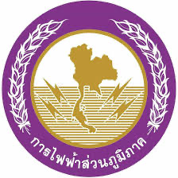
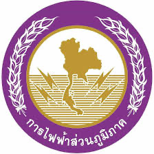

ประสบการณ์ที่ได้จากการฝึกงาน
สถานที่ฝึกงาน : ศูนย์ฝึกปฏิบัติการไฟฟ้าแรงสูง การไฟฟ้าส่วนภูมิภาค
- ได้เข้าร่วมอบรมหลายหลักสูตร
- ได้ทำโปรเจค "เว็บไซต์จองห้องประชุม"

จบการศึกษามัธยมศึกษาตอนปลายที่ "โรงเรียนประจวบวิทยาลัย" ด้วยเกรดเฉลี่ย 3.14
ศึกษาต่อระดับปริญญาตรี "คณะวิศวกรรมศาสตร์และเทคโนโลยีอุตสาหกรรม สาขาอิเล็กทรอนิกส์และระบบคอมพิวเตอร์ มหาวิทยาลัยศิลปากร"
เกรดเฉลี่ยรวมปี 1-3 : 2.84
สถานที่ฝึกงาน : ศูนย์ฝึกปฏิบัติการไฟฟ้าแรงสูง การไฟฟ้าส่วนภูมิภาค
